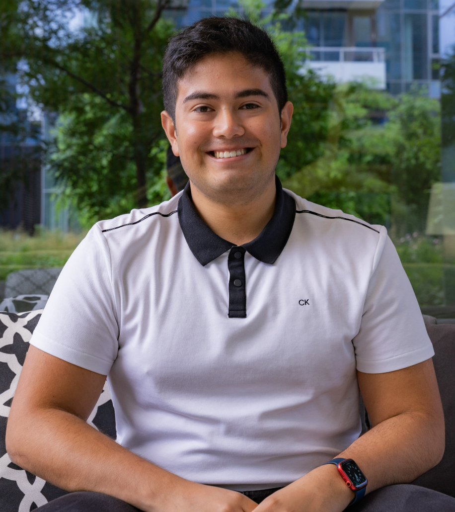

Thomas Mejia
Director of Logistics @ Gina Cody Entrepreneurship Society
Computer Engineering Student @ Concordia University

About me
Hello! I’m Thomas Mejia, a committed Computer Engineering student at Concordia University. I’m passionate about technology and innovation, constantly seeking opportunities to grow and excel. With a love for coding and hardware design, I aim to make a positive impact in the industry!
Work Experience
Software Research Assistant Intern, Concordia University, Montreal, Canada, May 2023 - September 2023
My responsibilities involve contributing to various aspects of the mod's design, implementation, bug fixing, optimization, research, innovation and testing through different versions of ChessMod in Minecraft My responsibilities involve contributing to various aspects of the mod's design, implementation, bug fixing, optimization, research, innovation and testing through different versions of ChessMod in Minecraft
Customer Experience, Walmart, Laval, Canada July 2020 - June 2023
As a Customer Experience Associate at Walmart, I play a crucial role in ensuring seamless and positive interactions with our customers by providing exceptional service, resolving inquiries, and assisting with product information. I collaborate with a dynamic team to uphold the highest standards of customer satisfaction and contribute to the overall success of the store.
Education
Computer Engineering, Bachelor of Engineering.
Concordia University, Montreal, September 2022 - May 2026 (Expected)
Computer Science and Mathematics, Diploma College Studies.
College de Bois-de-Boulogne, Montreal, August 2019 - May 2022
Associations
Gina Cody Entrepreneurship Society, Montreal, Canada.
Director of Logistics, April 2023 - Present
- As Director of Logistics, I am responsible for coordinating and managing logistics for all student-related events like UpStart ensuring seamless execution and positive attendee experiences.As Director of Logistics, I am responsible for coordinating and managing logistics for all student-related events like UpStart ensuring seamless execution and positive attendee experiences.
First-Year Representatitve, September 2022 - April 2023
- As First-Year Representative at GCES, I advocate for new members' needs and collaborate with executive members to organize engaging events for first-year students and beyond.
Google Developper student Club at Concordia University
Director of Internal, September 2023 - Present
- Develop and execute strategic plans for internal affairs that alligns the mission of GDSC.
Projects
Online Resume - Github (Language Used: HTML)
- Showcase my HTML skills that I learned through Web Development Bootcamp on Udemy.
autoXschedule - Github (Language Used: Next.js/React.js, Java)
- Handled the conceptual design of the website
- Responsible of the Front-End Development of the website.
ENGR 290 Hovercraft Competition (Language Used : C/C++)
- Organized meetings, and helped teammates during the construction of the hovercraft.
- Helped the software developper of the team for debugging purposes in C/C++.
ChessMod - Github (Language Used : Java)
- Ensuring backward and forward compatibility: Adapting the mod to work seamlessly with different versions of
Minecraft.
- Updating codebase: Regularly reviewing and updating the mod’s codebase to incorporate changes through different
versions.
- Created a ChessWrench item: Able to seamlessly reset and change the position of the chessboard, providing users
with a versatile tool to enhance their experience.
- Focus on enhancing the overall experience for participants through efficient logistical management.
- Strive to create a platform that fosters innovation, networking, and entrepreneurial excellence for Engineering and
Computer Science students.
Astroverse - Github (Unreal Engine 4 / C++)
- Collaborated with team members in the conceptualization and design phase to outline Astroverse core’s features.
Contact Me!